跳岛——一个为青年人提供更多探索机会的平台
奥德赛时期青年对未来方向的迷茫与探索
——一次从洞察到产品的工作室全程记录
一切的开始，是一个我们都熟悉的词——迷茫。
把镜头拉远——从全国的数据看，这份迷茫有它的时代注脚。
总量在涨、方向难找、心理承压——这正是"奥德赛时期"的真实底色，也是我们决定做"跳岛"的起点。
最痛苦的就是不确定感。好像每一条路都可以走，但每一条路，又好像都不能永远走下去。
想换方向试试，可试错成本我承担不起。
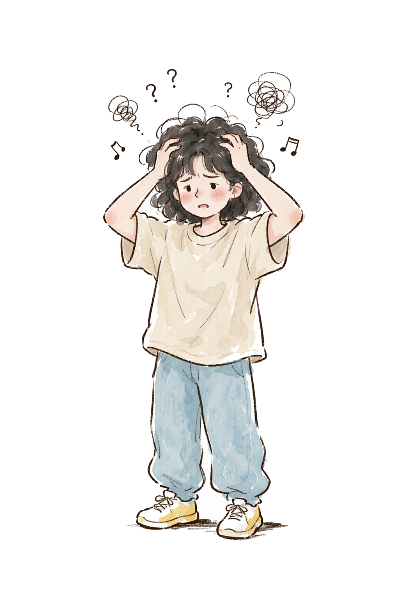
想探索别的出路，一上手就是高门槛实习。
光靠刷视频了解职业，根本看不到真实样子。
以下是我们在创作营里走过的每一步——从 5 场访谈、15 条记录开始，一路收敛、转化、验证，直到"跳岛"这个概念自己浮出水面。
先发问卷摸清共性，再走到 5 位朋友面前深聊——她们都是大三学生，正站在升学与就业的岔路口。
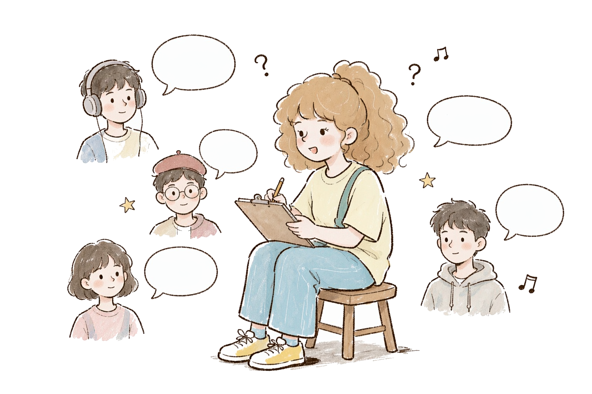
的受访青年，对未来方向感到迷茫依据问卷后台统计 · 有效样本 81 份
大家不是没有想做的事，只是不知道怎么去尝试。
不知道去哪里低成本体验、去接触真实的工作内容，没有渠道去浅浅试一下，只能一直停留在「想想而已」。
首先是怕试错的代价太大：时间、精力，还有身边人的期待。
把 15 条访谈记录与 5 个主观点归纳成第一张画像：「纠结探索的小研」——每一句描述都标注 P 编号，可回溯到访谈原话。
把访谈原话逐条拆成 15 条记录（P01–P15），一轮轮归拢、命名、合并，收敛出 5 个主观点。
旅程地图的"机会点"一行，直接长成了产品的骨架——四个机会点，四个机制，一一对应。调研没有停在纸面上，而是逐条变成了 App 里的设计决策。
提供情绪接纳，让用户意识到迷茫是正常现象，缓解起步焦虑
兴趣引导 + 全程温和文案
"不用想清楚为什么，选 3 个让你愿意多看一眼的方向就够了。"不上价值、不下结论。提供真实全面的参考，降低信息不对称，帮用户判断适配度
真实导师档案 + 职业岛详情
教育背景 / 从业经历 / 认证标识，真实任务描述与体验者评价（好评与中差评都可见）。设计低风险模拟体验，不用付出大代价就能试错
三档登岛 + 离岛排除
初步接触半天 ¥29 起；登过、看过、不留下，也省下未来几个月的纠结——排除也是一种解锁。提供陪伴机制，帮用户克服拖延，迈出第一步
导师带练 + 预约锁定
"不用急，跟着导师走"——体验进行中随手记录心情，日志引导一步步写完。5 份同理心地图、5 大痛点、4 个机会点摆在桌上后，我们把它们重新压成一句设计问题——它既是头脑风暴的起点，也是后面每一个产品决策的检验标准：能不能帮青年更低成本地探索人生方向？
围绕"如果有一个东西能帮人探索未来，它可以是什么的"这个开放问题，团队做了一轮不设限的头脑风暴——15 个点子贴满一整面墙。有脚踏实地的，也有天马行空的；正是其中反复出现的"低成本试错""体验不同人生""让选择看得见"，最后汇成了"跳岛"。
（小程序）
体验不同人生。
收集一些在本领域已经获得一些成就的人分享的经验。
组织低成本小实践，在群内互相交流，分享实践经验。
把不同人生轨迹发展的道路的时间线、收益、风险可视化，让选择更明确。
每天可以体验不同人生。
帮助规划不同选择的具体规划。
不用担心沉没成本，随意试错尝试。
可以预见自己不同选择的未来。
穿梭到自己不同人生轨迹的任意时间段。
可以 0 成本学会任意想学会的技能，并且毫不费力。
好运降临，干啥都能成功。
每天以上帝视角看自己设定的主角在不同人生里闯荡，看看别人在不同人生里是怎样探索的。
体验短剧女主的人生。
可以做任何探索尝试，不用承担后果。
动手之前，我们先把市面上已有的解法翻了一遍：有人把"岗位"做成线上模拟，有人把"前辈"变成随叫随到的导师，也有人用 VR/AR 把"现场"搬进屏幕——它们各自解决了问题的一半。
免费线上虚拟实习 / 岗位工作模拟平台，与摩根大通、BCG、德勤、微软等大企业合作。用户完成一套企业定制的模拟任务（数据分析、写方案、备忘录等），体验岗位真实的业务工作。
免费全球导师咨询社区，主打一对一 30 分钟职业沟通。首页可搜索行业导师，按公司、专业、国家筛选，预约线上交流，获取求职、作品集、职业困惑的建议。
团队发现上海线下职业体验日的痛点：往返交通耗时、单次体验很短，只能浅尝，很难摸到岗位真正核心的工作内容，学生依然对职业一知半解。于是以 VR/AR＋AI 智能体为核心，做沉浸式职业体验。
三家都在让职业变得"可见、可问、可了解"，但都停在屏幕里——缺一次真实、低门槛、可回退的亲手尝试，这正是"跳岛"要补的那一块。
竞品把职业做得"看得见、问得到"，我们想让它做得到：把一次职业探索拆成五件能落地的事——先看见兴趣，再找到附近的机会，约得上、上得了手，最后把这次尝试沉淀成对自己的认识。
探索兴趣，发现职业方向
定位周边，寻找体验机会
选择项目，预约线下体验
真实参与，了解职业日常
记录体验，积累自我认知
根据前面梳理的产品核心功能，我们先用灰阶低保真把主流程跑通：首页负责发现与推荐，详情页承接选择与预约，总结页把一次尝试沉淀成记录——三个屏幕串起"发现 → 预约 → 复盘"的一次完整登岛。
嗨，林漫 · 探索第 46 天
与其想几个月，不如先跳一座岛。
FOR YOU
跟着摄影师走一条街，完成一次真实的人像拍摄。
这是你 09.06 在「平面设计师」留下的感受。
当时写下的，都还在这里。
“排版比想象中更像解题，喜欢最后对齐的那一刻。”
它不是一个点子直接长成的——从选题到 2.0，一共走了八步，每一步都留下了能回查的依据。
前一步的产出，就是后一步的依据。
奥德赛时期的职业迷茫
依据中国青年报 10095 份问卷、智联调研：18–24 岁青年迷茫与压力居首。
线上问卷 81 份
依据82.76% 感到迷茫，其中 56.79% 是“有想法但规划不清”。
5 位大三学生深聊
依据15 条访谈记录（P01–P15），收敛出 5 个主观点。
已有解法翻一遍
依据虚拟实习、体验日、VR/AR 各解决一半，缺的是真实、低成本、可回退。
15 个点子贴满墙
依据反复出现：低成本试错、体验不同人生、让选择看得见。
4 个机会点 → 4 个机制
依据旅程地图的机会点逐条落成功能，先跑通最小闭环。
5 人独立走完全程
依据5 人都能一句话说清产品；问题集中在路径与信息，记成 5 条。
三处新增，整体改版
依据按测试清单逐条改，再补提醒、核销、画像三块拼图。
八步不是八份作业，是一条链：问卷确认问题有多普遍，访谈看清它长什么样，市场调研找出别人留下的空档，头脑风暴给出候选，1.0 先把最小闭环跑起来，用户测试再把走不通的地方标出来，2.0 才补上提醒、核销与画像。
跳过任何一步，后面都会有人替你补课——要么是用户，要么是上线之后。
我们请了身边 5 位朋友（在校生与刚工作的人），在不做任何讲解的情况下独立走完“找岛 → 选店 → 预约 → 看总结”这条路径。全程只观察、不提示，记下他们停下来的位置，和他们说出口的第一句话。
01「选带教人的按钮有点散，点起来费劲」，也有人觉得这一屏没什么用
→把带教人并入预约页，三档合成一张整张可点的卡片，少一步。
02「看完评价按返回，跳回最上面，还要重新往下拉」
→返回时保留原来的位置，直接回到刚看的那一条。
03「以为店铺页上面的按钮能点，结果点不了」
→顶部入口改成明确的 tab：能点的加下划线，不能点的置灰不可点。
04「店铺照片有点少」「体验日记想再详细点就好了」
→每家店补 4–6 张实景图；日记拆成最有趣 / 最困难 / 当时兴奋度三项。
05「不登录直接进主界面，点开“我的”页没有数据」
→未登录也预置一份示例档案，「我的」不再是空白页。
5 个人都能用一句话说清它是做什么的——“可以真的去体验不同职业”。定位通过，剩下的问题几乎都在路径和信息上；V2 就按这份清单逐条改。
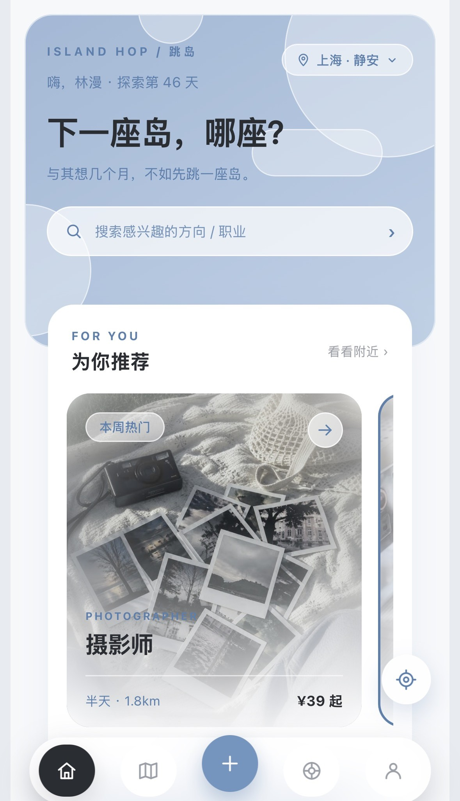
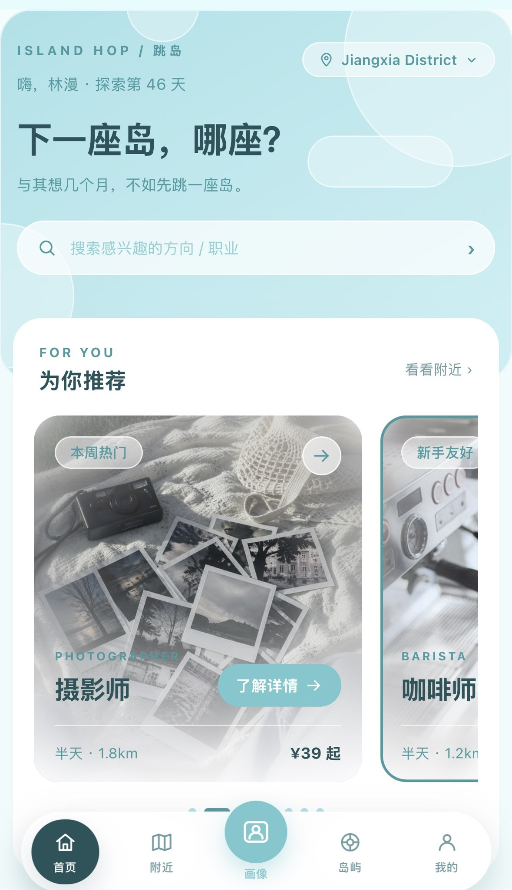
同一套改法也落到详情页与日记页上，见下一页。
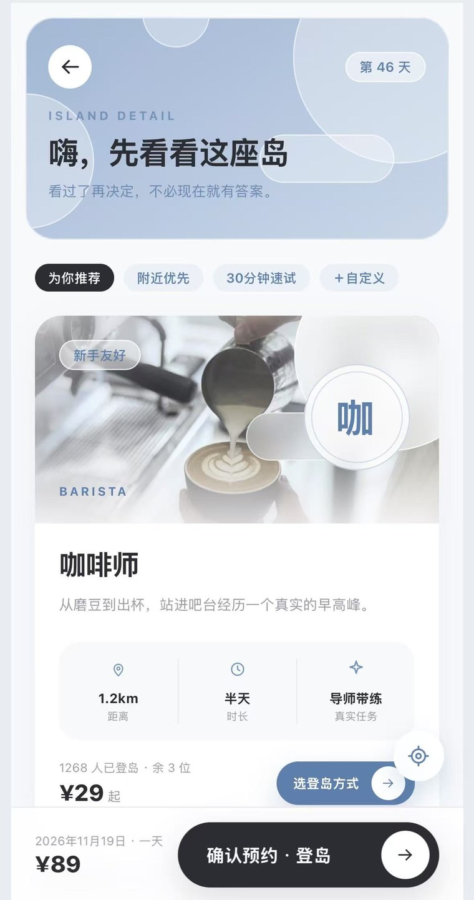
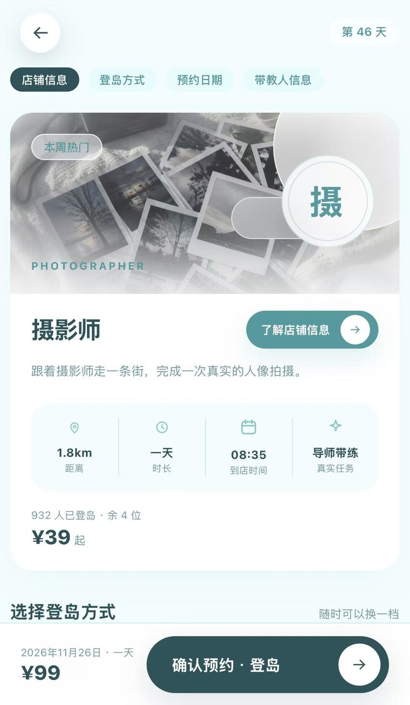
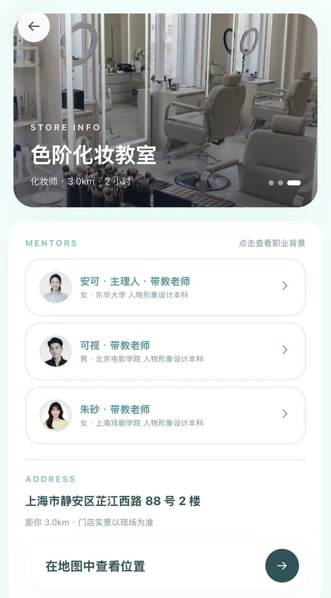
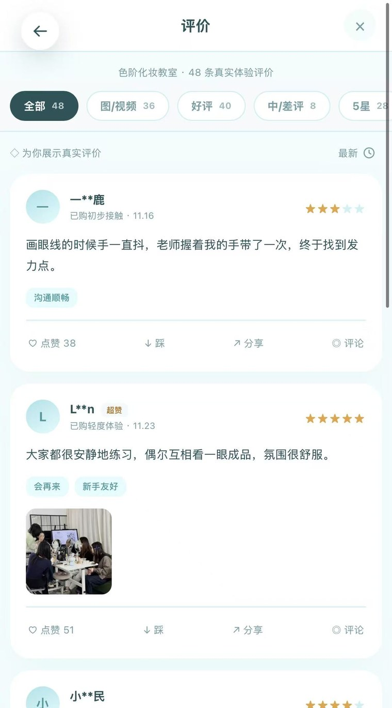
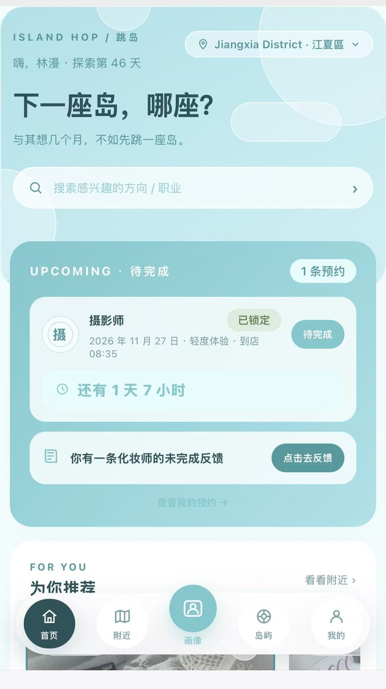
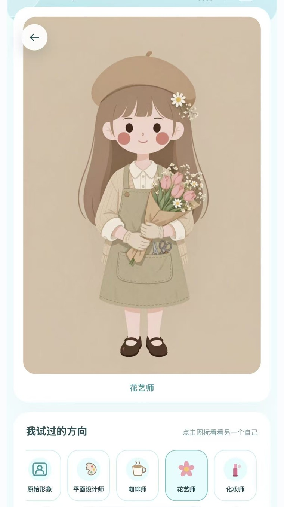
从选兴趣到画像生长，一次真实的登岛会走过这七步。
不用想清楚为什么，选 3 个愿意多看一眼的方向。
地图上看看附近有什么岛，先看看再决定。
半天 / 一天 / 两天，挑一位带你登岛的人。
锁定一次真实的时间，一次说走就走的登岛。
跟着导师旁观、上手，完成一项真实的小任务。
记下有意思与硌脚的环节，不急着下结论。
想再登岛或离岛排除，偏好坐标越来越清晰。
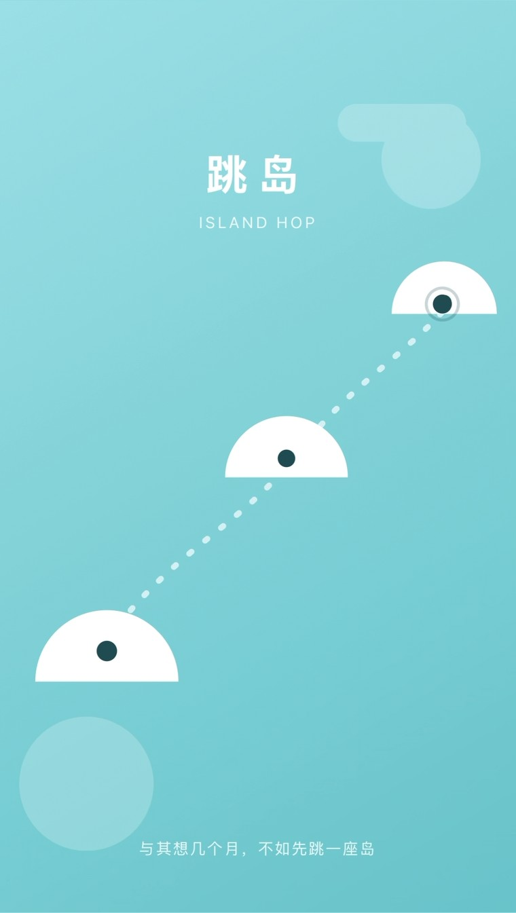
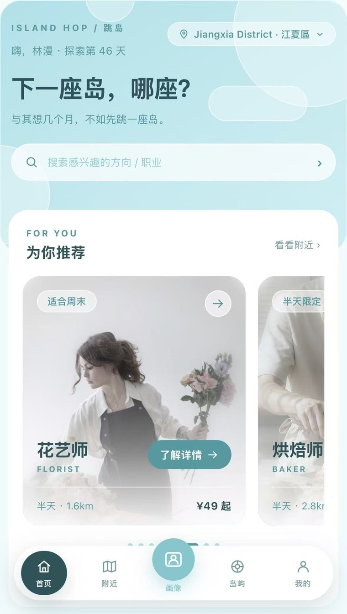
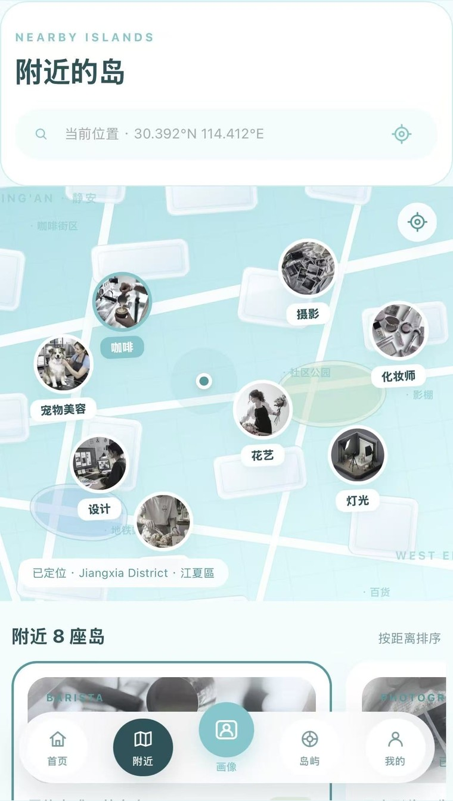
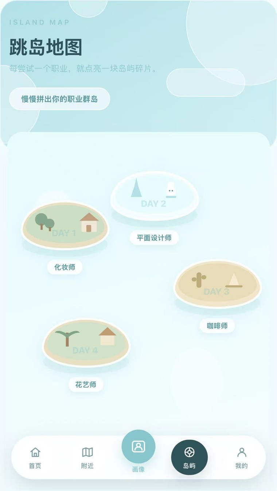